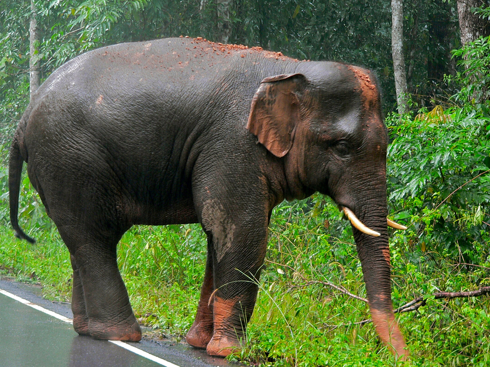

Elephants are mammals of the family Elephantidae and the largest existing land animals. Three species are currently recognised: the African bush elephant, the African forest elephant, and the Asian elephant. Elephantidae is the only surviving family of the order Proboscidea; extinct members include the mastodons. The family Elephantidae also contains several now-extinct groups, including the mammoths and straight-tusked elephants. African elephants have larger ears and concave backs, whereas Asian elephants have smaller ears, and convex or level backs. Distinctive features of all elephants include a long proboscis called a trunk, tusks, large ear flaps, massive legs, and tough but sensitive skin. The trunk is used for breathing, bringing food and water to the mouth, and grasping objects. Tusks, which are derived from the incisor teeth, serve both as weapons and as tools for moving objects and digging. The large ear flaps assist in maintaining a constant body temperature as well as in communication. The pillar-like legs carry their great weight.
Learn more

| Most famous elephants | |||
|---|---|---|---|
| Number | Name | Ref | Color |
| 1 | Manny | Ace Age | Brown |
| 2 | Dumbo | Disney | Grey |
| 3 | Moudak | Stravinsky | |